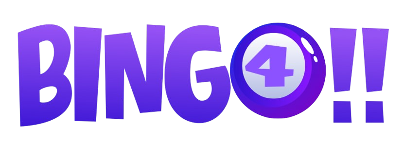

O Bingo é um jogo de azar divertido no qual todos podem participar. Nele, usa-se uma cartela de vinte e cinco casas e, se você conseguir preencher cinco (ou todas, conforme o combinado) pode gritar “Bingo”!
Cada jogador deve ter uma cartela. As cartelas têm vinte e cinco casas com números aleatórios nelas, e a palavra “BINGO” acima de tudo. O objetivo é cobrir cinco casas, seja na fileira vertical, horizontal ou diagonal. Ao comprar um jogo de Bingo, as cartelas virão junto. Para as crianças, você pode imprimir cartelas da internet e escrever palavras, símbolos ou figuras.
Explique a todos como a combinação de letras e números funciona. No Bingo normal, há 75 dessas combinações, e cada uma corresponde a uma casa. Por exemplo, todos os números da coluna B correspondem a números que sejam combinados com essa letra. Portanto, se cantarem “B-9”, significa que você deve procurar o número 9 na coluna B. Caso queira uma versão mais simples para as crianças, use palavras ou figuras em vez de combinações de letras e números.
Escolha alguém para cantar os números. “Cantar” significa sortear os números e dizê-los em voz alta para que os jogadores os marquem em suas cartelas. Nada impede a pessoa que cantar de jogar também, contanto que ela não roube. Caso vá jogar em um grupo de igreja ou algo semelhante, alguém será designado para fazer os sorteios (nesse caso, a pessoa não joga).
Passe as cartelas para todos. Cada um precisa ter, no mínimo, uma cartela. Eles podem ter mais de uma, se quiserem, contanto que consigam acompanhar e marcar em todas ao mesmo tempo. Jogar com várias cartelas aumenta as chances de ganhar, mas também é mais difícil de administrar. Também é possível ganhar com mais de uma cartela na mesma rodada.
Forneça pedrinhas de Bingo. Os jogadores precisam de algo para marcar os números sorteados. Para tal, temos as pedrinhas de Bingo, mas qualquer objeto que caiba nos quadrados servirá. Fora as pedrinhas, podem ser usados: fichas de pôquer, moedas, feijões, milho, ou até pequenos pedaços de papel.
Marque a casa central. Ela é considerada “A Branca”, ou seja, um ponto grátis (para todos, nesse caso).
Forneça os números e letras que serão cantados. Eles podem ser escritos em pedaços de papel, embrulhados e sorteados, ou você pode usar bolas de Bingo verdadeiras (contanto que correspondam aos números e letras nas cartelas). Coloque-os em um balde ou tigela que possa ser mexido para garantir que o sorteio seja aleatório. Mas, novamente, o melhor é mesmo uma roda de Bingo. Caso as crianças estejam com figuras e palavras nas cartelas, lembre-se de que as mesmas figuras e palavras precisam estar disponíveis para o sorteio.